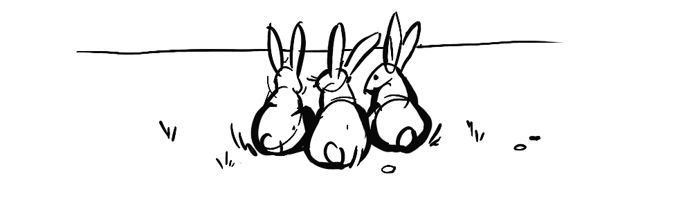
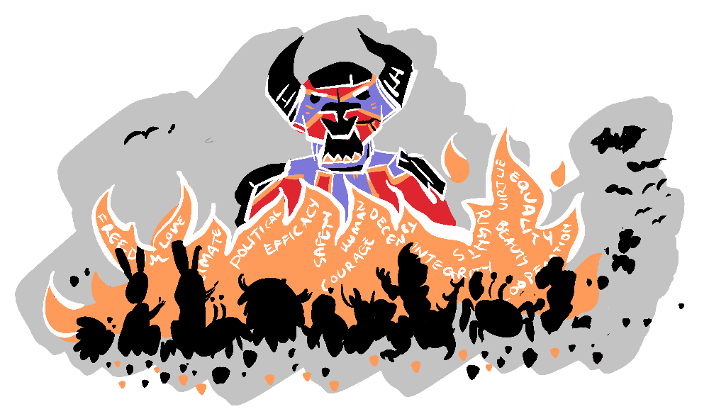
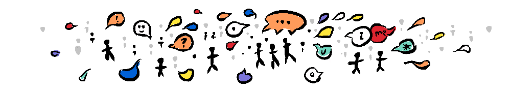
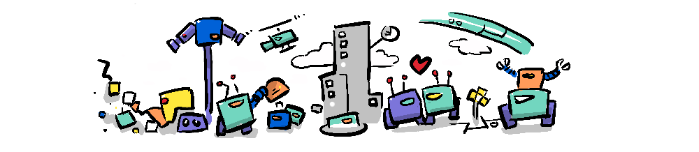
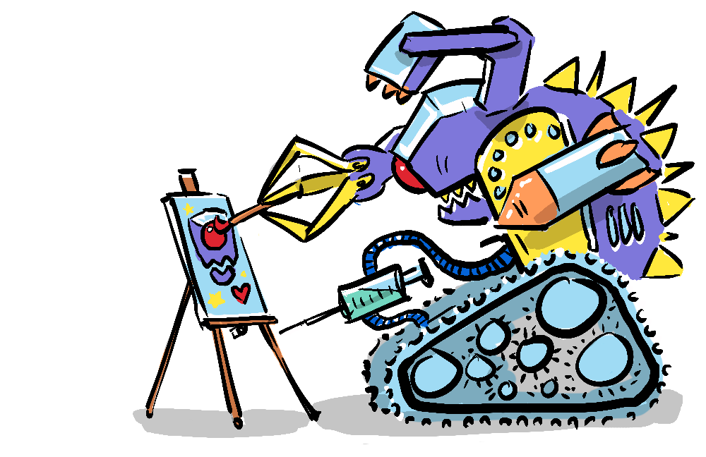
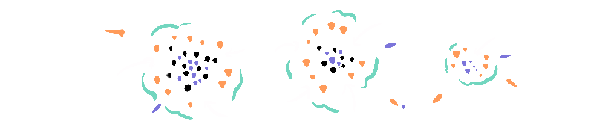
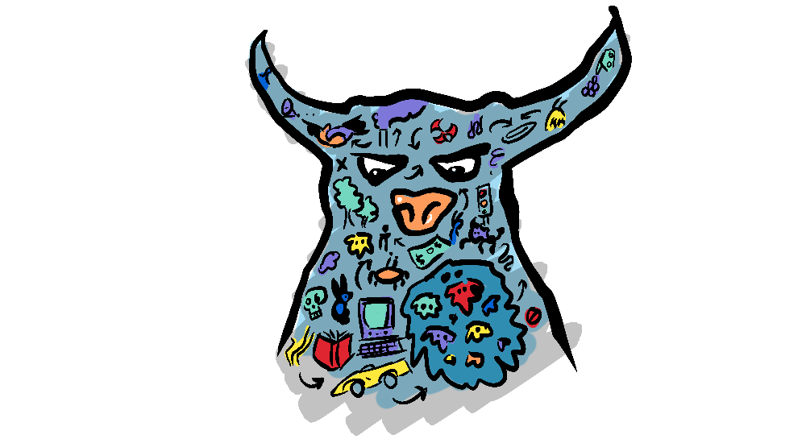

~ pandora's dangerous children ~
On the Shoulders of Substrates looked at the substrate-phenomena-substrate cycle as a way of understanding emergence. But is there a better way to view these stages of emergence?
"What's important are the replicators you have and the levels of replicators, one feeding on the one before." - Susan Blackmore
In her 2008 TED Talk, Susan Blackmore proposed that we should instead focus on replicators. She defines three types of replicators; Genes, Memes, and her own contribution—Temes. I highly recommend listening to the talk to understand her fascinating perspective.
Universal Darwinism holds that natural selection is not confined to genetic evolution, but extends to all replicators that have three features; Heredity, Variation, and Selection. Darwin himself actually hinted at this extended application of natural selection when he wrote about the evolution of languages.
Blackmore describes cultural evolution as the "dangerous child" of a "pandoran species". By letting the second replicator (memes) out of the box, humanity has flourished in many ways, and yet has been enabled to visit catastrophic destruction upon the environment we, and all other species, rely on.
Wait, silly pictures with funny captions are destroying the earth?
Not quite. By "meme" Blackmore is referring to the term coined by Richard Dawkins in "The Selfish Gene" describing an idea that is imitated and copied across culture—an analogy Dawkins used to illustrate and extend the idea of genes. Blackmore is not referring to internet memes, which take a particular conceptual-template represented by an iconic picture and substitute text to create comedic analogies (or something like that). Although, internet memes are still memes—in fact, the internet meme format itself is a meme.
A meme could be a mathematical formula, or a lasagne recipe, but memes don't necessarily replicate because they convey truth, they can also pass on because they are beautiful (like fashion, artwork, a nice lawn or flower bed) or because they contain within themselves an imperative to "go forth and multiply" like religion—passing on both the genes and the memes!

Memes can find themselves in competition with genes; fake news, climate denial, anti-vax, and tribalism are all comprised of memes that are at odds with the survival of our genes. However, because memes are dependent on brains that are, in turn, dependent on genes they are somewhat limited in staging a full mutiny against our interests. This may not be the case with temes.
Blackmore extends the idea of genes and memes to propose a "third replicator". Temes are meme factories that operate outside of humans, in our technology–like computer programs and particularly emergent systems. Where animals and humans are the medium for the first two replicators (genes and memes), temes might take over the job as replicator for memes, and the memes might prefer them to us...
"The temes are selfish replicators and they don't care about us, or our planet or anything else."
As technology becomes increasingly decoupled from humans, the partnership of memes and temes may become a liability. Self-replicating AI might be the point at which temes break their dependency on humanity for production, and Susan Blackmore warns–that threshold should be approached with great trepidation.
There is a counterpoint to this doom and gloom though, in that, if we look back at emergence, as we have, in terms of substrates, the principle of emergence doesn't hold that each succeeding phenomena destroys the one before, in fact quite the opposite, the maintenance of the underlying substrate is vital. Though, like with the environment, some coordinated effort may be required.
While Blackmore defines three replicators on earth; genes, memes, and temes. I would contend, in the spirit of universal darwinism, that we could define some of the substrates discussed previously as proto-replicators, given the substrates reproduce consistent forms (pseudo-heredity) with variation and survival (selection).
We could employ more of the alphabet to our cause; snenes (supernova replicators), grenes (gravitational replicators) and of course quenes (quantum replicators).
Blackmore's insights over 15 years ago are worth considering at present, given recent progress in AI, but are also just a unique lens with which to view our own motivations and actions.
Who are we serving when we gossip in the office–our genes or our memes? Who benefits most from our technology? Is the internet a crowning achievement of humanity or an inevitable environment cultivated by memes to give rise to temes? Is our relationship with these other replicators symbiotic or parasitic?
Replicators are yet another engine of emergence, creating new substrates, complexity, and dissipative structures which, on balance, increase entropy in the universe. But so what? If emergence is just about increasing complexity while expediting universal demise, what are we doing? What about beauty, love, connection? Why strive to better ourselves, why try to understand the cosmos? All good questions—I can only give my own thoughts in the next part, concluding this series with the relationship of emergence to beauty and meaning.